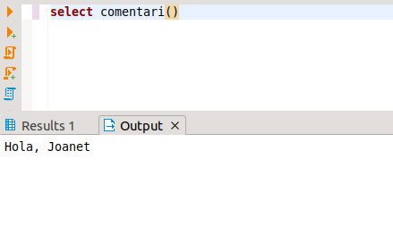

2. PL/pgSQL
PL/pgSQL vol dir llenguatge procedural de PostgreSQL. Canvia respecte el que hem vist, que sempre ha estat interactiu. El PL/pgSQL ens permetrà construir funcions utilitzant un llenguatge procedimental, prou semblant al PASCAL i un poc paregut al Java. Podrem definir variables, crear bucles, ... però també incorporar sentències de SQL; podrem definir cursors, que seran variables que ens permetran agafar línia a línia el resultat d’un SELECT.
Una de les aplicacions és la creació de TRIGGERS, que són mòduls de programa que s’activen quan s’acompleix una determinada condició de la Base de Dades, després de la inserció, modificació o esborrat en una determinada taula.
Qualsevol cosa que ens definim (funció, Trigger,...), fins i tot un bloc de codi dins d'un bloc més gran, tindrà la següent estructura:
[DECLARE
declaració de variables]
BEGIN
Instruccions
END;Tot anirà per blocs: bloc de declaracions de variables, bloc del cos de la funció o procediment. I les sentències de control també seran blocs, amb un principi (BEGIN) i un END al final. Totes les instruccions acaben en punt i coma.
Observeu que ací BEGIN i END no tenen el significat de SQL, és a dir no serviran per a començar o acabar una transacció.
Vejam un exemple (sobre l'usuari geo_grup_9999x):
CREATE OR REPLACE FUNCTION comentari() RETURNS void AS '
DECLARE
i text := ''Joanet'';
BEGIN
i:=''Hola, '' || i;
RAISE NOTICE ''%'',i;
END; ' LANGUAGE PLPGSQL;RAISE NOTICE serveix per traure un comentari per pantalla. En l'entorn de DBeaver veurem el resultat en la pestanya Output.
Hem de ser conscients que aquesta consulta és de creació d'una funció. El resultat d'aquesta sentència és la creació de la funció, i per tant com a resultat únicament ens dirà que l'ha creada, si tot ha anat bé
NOTA
Hem posat dues cometes simples en compte d'una en les constants alfanumèriques perquè tota la funció va declarada entre cometes simples.
Però es pot modificar aquest delimitador de tota la funció, i en compte de que siga la cometa, que siga una cadena amb $ davant i darrere, per exemple $cos$. Aleshores no caldria posar dues cometes simples
CREATE OR REPLACE FUNCTION comentari() RETURNS void AS $cos$
DECLARE
i text := 'Joanet';
BEGIN
i:='Hola, ' || i;
RAISE NOTICE '%',i;
END; $cos$
LANGUAGE plpgsql ;Si han hagut errors, els haurem de corregir (si l'error és lògic, s'haurà creat igual la funció; i si en modificar-la només fem CREATE FUNCTION ... ens dirà que ja està creada; per això és convenient posar CREATE OR REPLACE FUNCTION ...).
Quan ja no hi hagen errors, la podrem executar amb la sentència:
SELECT comentari();Recordem que en l'entorn de DBeaver veurem el resultat en la pestanya Output

Llicenciat sota la Llicència Creative Commons Reconeixement NoComercial CompartirIgual 3.0